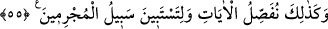

bilmeyerek onu yaparsa demektir. Çünkü sonunun zarara varacağını bildiği veya
zannettiği halde böyle bir işi yapan kimse câhil hükmündedir. Kötülüğü işlemek,
gerçekten veya hükmen cehaletten uzak olmaz.
İşâret ehli şöyle demişlerdir: “Sizden” ifadesinde, kötülük işleyenlerin iki sınıf
olduğuna işaret vardır: Ey hidâyete ermiş mü’minler, sizden bir sınıf ve sizden
başkalarından, yani dalalette olan kâfirlerden bir sınıf demektir.
Cehalet iki kısımdır:
1. Dalalet cehaleti: Bu, ruhlar aleminde serpilen nurun isabet etmemesinin netîcesidir.
2. Cehûliyyet (çok câhil olma) cehaleti: Bu, insanın fıtratında olan aşırı câhilliktir
(bk. el-Ahzâb, 33/72).
Buna göre kâfirlerden kim dalalet cehaleti ile bir kötülük yaparsa onun için tevbe
imkânı yoktur. Bunun aksine mü’minlerden kim fıtratında var olan cehûliyyet cehaleti ile
bir kötülük işlerse tevbe etmesi mümkündür. Nitekim Allah Teâlâ şöyle buyurmuştur:
“sonra” yaptığı kötülüğün “ardından tevbe eder” o kötülükten döner “ve kendini”
bozduğunu “ıslah ederse” Islâh, yaptığı kötülüğe bir daha dönmemek ve fesâda
sapmamaktır. “bilsin ki O,” Allah Teâlâ kendisini “çok bağışlayan, çok esirgeyendir.”
Kâşifî Farsça tefsirinde şöyle der: İmam Kuşeyrî (rh.a.) şöyle buyurmuştur: Eğer
melek senin için zillet, Melik (Allah) rahmet yazmışsa, bu halde senin için iki yazı
vardır. Biri ezelî, diğeri vaktinde. Şu kesindir ki sonradan yazılan, ezelde yazılanı iptal
edemez. Bu âyet-i şerîfenin mazmunu, günah derdiyle hasta olanlar için şifadır. Şifanın
şartı ise perhizdir, yani tevbe ve istiğfar.
Günahkâr olanlar için, gece ve gündüz
İstiğfardan daha iyi bir şerbet yoktur
Dosta kavuşmak arzusunda olanlar için
İnleyip sızlamaktan/yalvarıp yakarmaktan başka çare yoktur
55. Böylece suçluların yolu belli olsun diye âyetleri iyice açıklıyoruz.
“Böylece âyetleri açıklıyoruz ki” Yani, işte biz böyle benzersiz şekilde itâat ehlinin,
günahda ısrar edenlerin, Allah’a çok iltica eden kulların (evvâbîn) sıfatları ile ilgili
Kur’an ayetlerini açıklıyoruz ki hak ve hakikat ortaya çıksın ve onunla amel edilsin.
“suçluların yolu belli olsun.” da ondan sakınılsın.
Suçluların yolunun belli olması ve açıklanması, helak olanın bir delil ile helak
olması, yaşayanın yine bir delil ile yaşaması içindir.
Şu halde akıl sâhibine gereken, kurtuluş ve felah yoluna girmek, salah ehlinin
ulaştıklarına ulaşmaktır. Yolun başı ise tevbe ve istiğfardır.